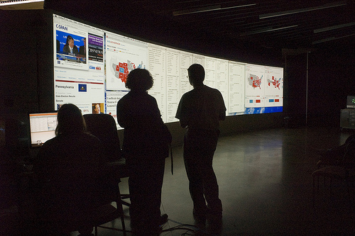

FOSS@MAGIC Featured Project: Hacking Election Night
Typically, politics on your average college campus looks alot like a Mock Debate where the Blues, Reds, and Greens all get up on stage and trash-talk each others' candidates like Mike Tyson at weigh-ins before stepping into Madison Square Garden. Election night here in the innovation center was not your typical college politics event. The atmosphere looked more like NASA mission control and CSPAN had a 40 foot wide HD love child. Such is the fun of our focus on media immersion.

Professor Sean Sutton, Chair of RIT's Political Science Department, and one of this author's personal mentors, wanted to do a live blogging event on election night with his students. Andrea Hickerson, Professor of the Department of
Communication Special Reporting in Politics Course, also wanted her students to be neck deep in the races leading up to and including election night. Political Science Professor and Lincoln Scholar Joe Fornieri too, wanted his students to have an outlet for their political interest on the big night as well, so between these 3 professors and the Center for Student Innovation, we put together one big election night event to provide political science and journalism students the opportunity to positively participate in the common goal of observing, analyzing, and commentating upon the Election and the processes of politics.
Once the event was established, we began reaching out to our local media outlets with the help of RIT's University News Services, and in particular John Follaco. At the same time, friend of FOSS@MAGIC and Local Public Radio & News Personality Rachel Ward of Rochester's NPR Affiliate WXXI, was invited to give a guest lecture in Andrea's Journalism Course. Rachel and Zack Seward met with our Programmer/Journalists, and were invited to participate in our election day coverage. Some weeks later, WXXI contacted our team about covering the election and what our students were planning on doing so they could cover the story. The week before the big day, FOSS@RIT sent some Hackers and Storytellers to WXXI HQ, to meet with Rachel, Zack, and IT pro Steve Dodd.
As Monroe County and most other County's Board of Elections in New York State have switched from classic lever voting machines, to new Electronic Optical Scan Machines, we all had to work together on making use of the new results from the Monroe County Board of Elections (MCBOE). During our Primary Results Viewing earlier this fall, we got our first look at the .XML files being made public, and the Flash Results page used to provide up-to-the-minute unnofficial results from the MCBOE.
Most media outlets task fleets of interns with following results pages just like this one, to manually copy, paste, compute, and re-paste the results into .html pages to provide results via the web. This process is painful and often by the time you go through all of this manual copy-pasting and refreshing, the results are already out of date. .XML files, however, work very similarly to something like an RSS feed, and provide an ongoing stream of data to the flash site. So why not try to tap into that stream to back-end and automatically update the .html results, instead of doing everything by hand? This is exactly what WXXI was looking to implement, and exactly what FOSS@RIT's Ace Hacker, Nate Case was able to execute. After about 30 mins of phonecalls to the MCBOE, and whois'ing various IP addresses, we managed to locate the (at the time, inactive) results page for Monroe County, and another active results page put out by the same software/voting machine provider in London, Ontario, Canada. From the results on that page, we were able to prototype an .XML->.html results page that would likely work with Monroe County's results once they were live!
After a follow-up meeting on Monday and a quick tire-kicking session, we pointed Rachel at the page, and embedded it into WXXI's InnovationTrail.org.
All we could do then, was wait.
9pm rolled around, and we anxiously waited for results to start popping up on the big screen. 9:15 came and went, and I nervously tugged at Nate's shirt, asking if he was sure everything was good to go. Nate smiled slyly, and said "If they post any results, they will show up on the page. Don't worry." By 9:35, a wave of gasps went across the audience, and then a round of applause, as the screens auto-refreshed and results began upticking on the screen for the first time.
Ofcourse, any time you are testing live code for the first time, you are going to have to make some last-minute tweaks and adjustments. Our first hiccup was when we looked at the Race for 28th congressional district and saw what seemed to be Louise Slaughter, getting Slaughtered. This was a quick and obvious indication that something was afoot, and lo and behold, we found that the folks providing the .XML file were re-using some of the id's in the code, and that we needed to do some manual summation in our script.
Once that was tackled, a few moments later, one of the more astute students, Alexandra Howland of Computer Science House tapped me on the shoulder and said, "It looks like there have been 1.2 million votes for Cuomo, but there aren't even 1 million people living in Rochester..." She was right, and we realized that the numbers were incrementing each time, instead of just updating. So we "fixed" that incrementation bug too, only to find later that our results, though precise, were not exactly accurate. In fact, our results were exactly double the numbers coming from the MCBOE. Nate then gave the script one last tweaking, and before all the districts had reported, we had a proper reporting page, with up-to-the-minute results.
Too often, when students do projects in courses it is under some pretense or using code that is only for a class project and will never see the light of day. This collaboration, however, was quite the opposite. Nate's scraper was not only used in an actual journalistic capacity by real journalists and news organizations, but he will also be submitting it as his final project for Andrea's course.
WXXI and FOSS@RIT are already talking about next year's Monroe County Legislature Race, and helping the MCBOE test their software for next fall. Putting theory into practice, and applying the principles of computer and political science to real world situations, to solve real world problems is the exciting new direction that academic collaboration is taking here at RIT, and will continue to move toward so long as we continue to work with talented students like Nate, Justin Lewis, and Chris DesLandes, who deserve a special thanks for running the screens, writing the scripts, and keeping the wheels on the wagon during the event.
Special thanks to WXXI and Rachel and Zack for giving our students a look behind the curtain at how political reporting actually works. Thank you too, to Professors Fornieri, Sutton, and Hickerson for giving our students the opportunity to actually apply their lessons, and the Center for Student Innovation for hosting the event.